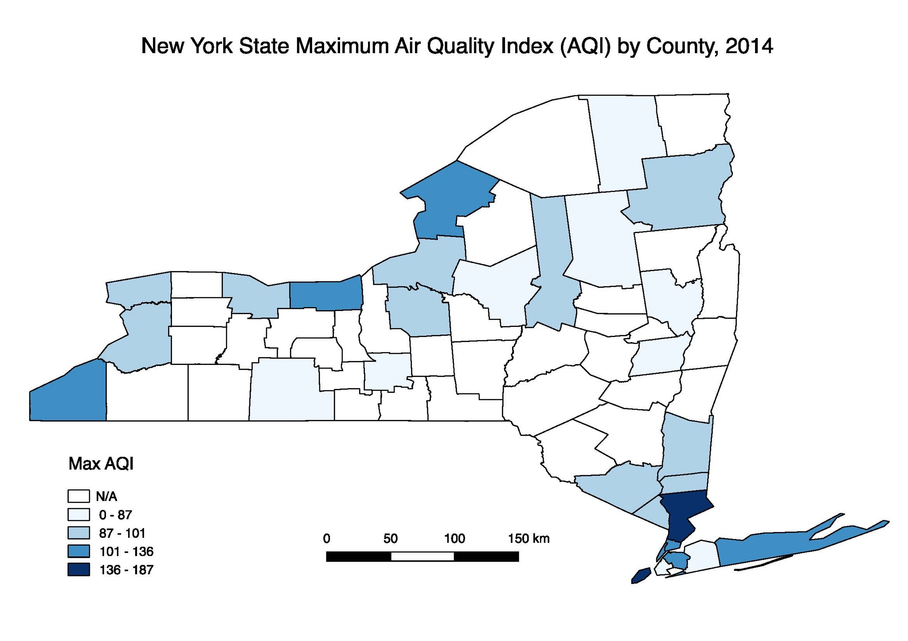

Unlike many factors we can control in determining our health, ambient (outdoor) air quality is almost impossible to alter. It accounts for significant morbidity and, indirectly, to mortality around the world. We were interested in how air pollution in New York State, measured through proxies such as PM2.5, ozone and air quality index (AQI), may lead to the acute exacerbation of chronic conditions like cardiovascular diseases and asthma as well as acute cardiovascular symptoms. Our goal is to illustrate trends in the relationship between air quality and acute health outcomes and areas (geographically and scientifically) requiring future research.
When someone breathes, they are exposed not to a single compound in isolation but rather to a mixture of compounds. Two compounds that are known to confer toxicity are ozone and fine particulate matter (PM2.5). Ozone is a fat soluble chemical than can bypass absorption in the upper respiratory system and penetrate down into the alveoli. PM2.5 is a tiny particle that, due to its size, can also travel deep into the alveoli. Both PM2.5 and ozone can have harmful local effects in the respiratory system and, because of their ability to cross from the lung into the bloodstream, can have harmful distal effects throughout the cardiovascular system.
For our data analysis, we used data from
Visit our Data tab to read more about our data sets.
Visit Explore to learn about our exploratory analyses.
If you’re interested in seeing the model building process, click here.
(Visit Plots to look at plots of our findings)
In our visualizations, we see that there are large disparities in rate of hospitalizations for asthma and cardiovascular disease at the county level. Most noticeably, we see that Bronx County has more than double the amount of asthma hospitalizations per 10,000 population than any other county. When looking at the association in the plot, a positive relationship between PM2.5 and Asthma ER hospitalizations is clear, although it is clear that ambient PM2.5 exposure is not the perfect predictor of asthma hospitalizations. Importantly, Bronx County is a clear outlier in the relationship. An interesting finding is that four out of the five boroughs of New York City (missing Richmond County, or Staten Island) are in the top 5 of asthma hospitalizations. This is not surprising, given that New York City as a large urban center that has much more possible pollutants driving the rate of hospitalizations.
Bronx County also rises above all other counties in terms of age-adjusted cardiovascular disease hospitalizations, but not by as much as for asthma hospitalizations. The other New York City borough in the top five is Kings County (Brooklyn). The plot of CVD and ambient PM 2.5 does not have as clear of a positive linear trend, and sees the available data clustered in the middle range of values for hospitalizations. We are somewhat surprised by the results, as our hypothesis was that ambient air quality would negatively affect CVD hospitalizations similarly to asthma hospitalizations. This indicates that there may be many additional covariates to consider when considering association between air quality and CVD.
Looking at our final models and their corresponding RMSE violin plots, we see that the adjusted model is better for both asthma and CVD hospitalizations. However, the asthma model is moderately well fitting with an R-squared value of 0.4044, whereas the CVD model is not well fitting with an R-squared value of 0.0488.

A major limitation of this analysis was missing data. Throughout the exploration phase, we found various measures of air quality for New York state that was incomplete. Although there are standards in place, definitions of air and air quality are not consistently measured across the different publicly available data sources that were looked at. Additionally, certain counties in New York state did not have any PM2.5 data available.
Missing data also caused limitations when looking at hospitalization rates for asthma and CVD across New York state. The final analysis shows a plot for CVD hospitalizations from 2012-2014, while the asthma hospitalization plot is only for 2014. This inconsistency makes it challenging to make comparisons across the two plots.
Finally, there could be other ways to measure the health outcome rates for CVD and asthma instead of hospitalization rates, which might not be accurate representation of true rates of the diseases based hospital access and other factors such as insurance status that might affect a person’s choice to go to a hospital.
The analysis confirms that ambient PM2.5 exposure is associated with asthma and CVD, using hospitalization rates as the proxy indicator. New York City counties, including the Bronx and New York, have high ambient PM2.5 exposure. Bronx counties has the most number of hospitalizations per 10,000 people for both asthma and CVD. Our analysis shows that exposure to ambient PM2.5 does not account for all the disparity in hospitalization rates seen in the Bronx, it does account for some of it. Interventions related to air quality should be focused in the Bronx and New York Counties.
Future studies should look into measures of air quality that are consistently collected for better comparability purposes. Additionally, different indicators for asthma and CVD would be helpful since hospitalization rates might not be the best measure for the purposes of this research question. Finally, we would recommend looking for data beyond what is publicly available to get a more complete picture of what is occurring across New York state.